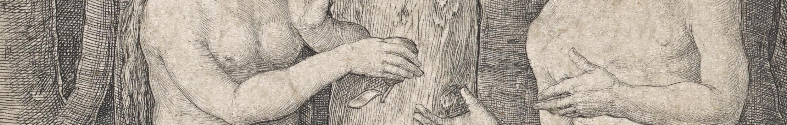
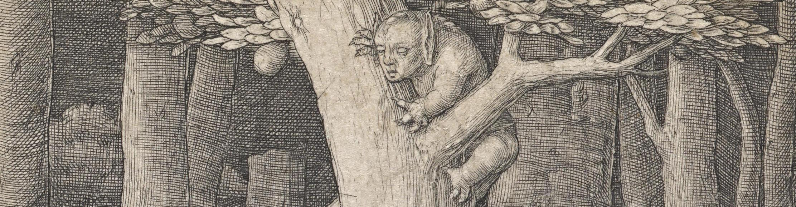

Nisi Dominus Psalm 127 Nisi Dominus aedificaverit domum, In vanum laboraverunt qui aedificant eam Nisi Dominus custodierit civitatem, frustra vigilat qui custodit eam. Vanum est vobis ante lucem surgere Surgite postquam sederitis, qui manducatis panem doloris, Cum dederit dilectis suis somnum. Ecce haereditas Domini, filii, Merces, fructus ventris. Sicut sagittae in manu potentis, Ita filii excussorum. Beatus vir qui implevit desiderium, Suum ex ipsis. Non confundetur cum Loquetur inimicis suis in porta. |
Not Without the Lord Psalm 127 If the Lord has not built up the house, In vain have they who built it laboured. If the Lord does not protect the city, For nothing will those who guard it watch. Vain are you to rise before the light, O you who eat the bread of grief. Arise only once your grief is rested, For he will give to his beloved sleep. Behold, children; the inheritance of the Lord, Reward and fruit of the womb. Just as arrows in the hands of the mighty, So too are children, sent forth into life. Blessed are they who have filled up Their grief with children. They will not be confounded When their enemies are declared at the door. |
